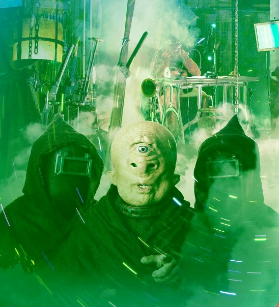

Эра Одиннадцатого Доктора
<<< НАЗАД ||| 5-6. Человек, которого никогда не было |||
или
ДАЛЬШЕ >>> к сериалу "Доктор Кто"
MVO ВГТРК, BaibaKo или Original [ENG]
Субтитры: Русские {TrueTransLate}

The Man Who Never Was
Дата выхода: 17-18 октября 2011
Формат: 2 эпизода по 30 мин.
| Варианты озвучек: | * Разные: смотрите по инструкции |
|---|---|
| Скачивание и просмотр: |
Джозеф Серф запустил в продажу новые компьютеры «СерфБук», и никто не может устоять перед покупкой. Все хотят иметь новое устройство — почему бы и нет? Что может быть опасного в компьютере?

